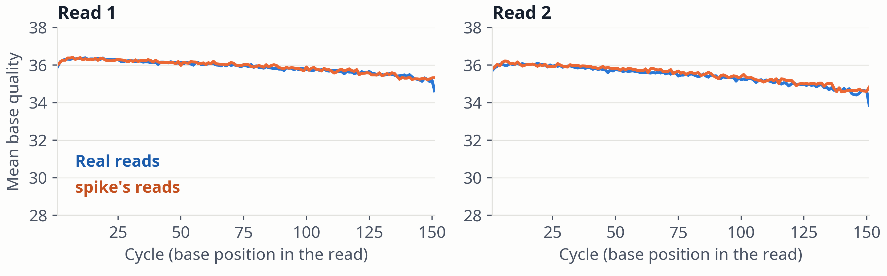

Figure 11. Mean base quality per cycle in sequencing order (reverse-strand reads reversed), read 1 and read 2, for real reads (n = 23,838) and spike's reads (n = 13,009) in the 25 windows of the SNV run. The y-axis starts at Q28.
The per-cycle means agree. The next two slides look at the spread around them.
spike · Results · 18 / 25